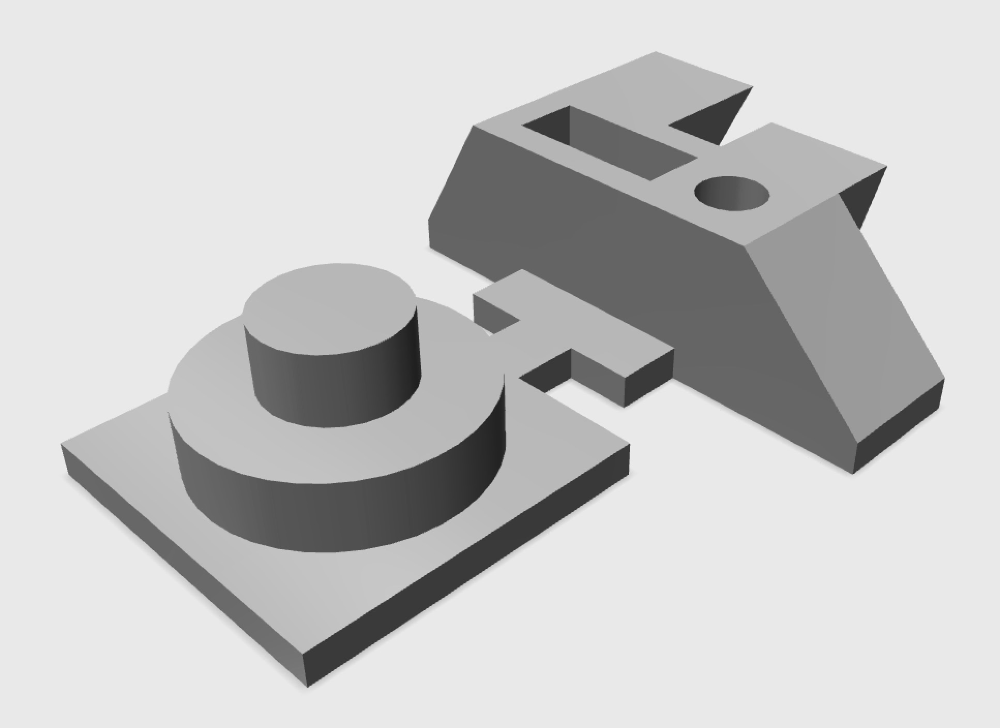

As part of my research in the area of 3D printing, I developed a geometric benchmarking object that can be used to quantify the dimensional accuracy of a 3D print. This, in turn, can enable the assessment of a 3D printer, material, or process. This benchmarking object is unique in that it requires very little material and can be printed in minutes. As a result, the design can be advantageous for use in experiments where a large number of objects must be produced to achieve statistical significance. Despite its small size, the object includes two inclined planes, two declined planes, a cylindrical void, a rectangular void, and various bosses.
Publications:
A simplified benchmarking model for the assessment of dimensional accuracy in FDM processes (2015 - IJASMM)
STL File for Benchmarking Object:
STL File

A view of the benchmarking object
The benchmarking object's dimensions (cm)
 The benchmarking object's dimensions (cm)
The benchmarking object's dimensions (cm)